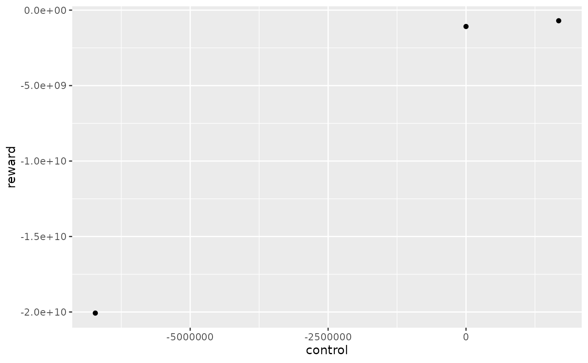
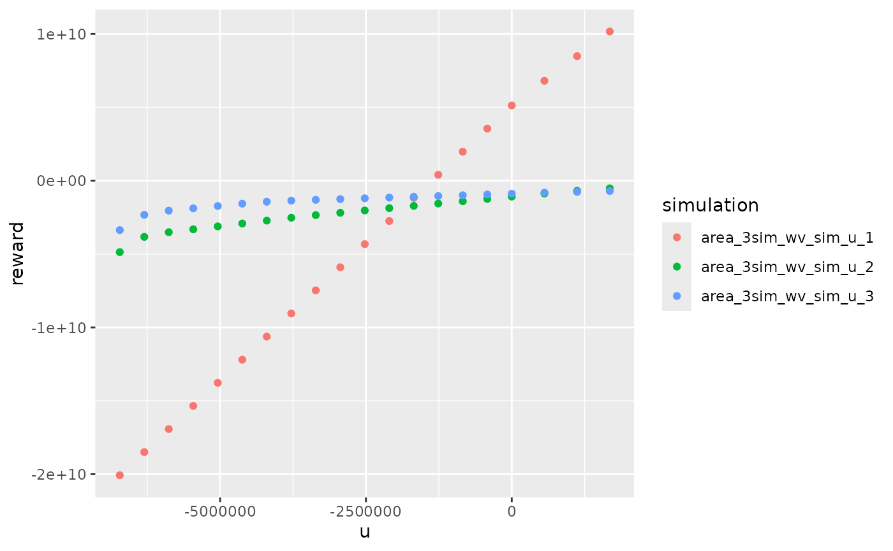
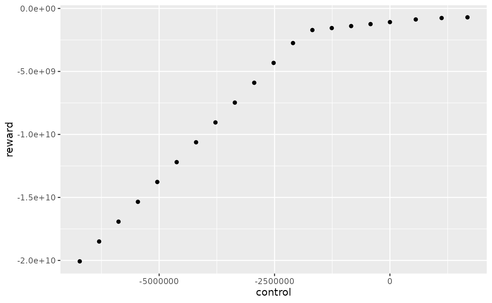
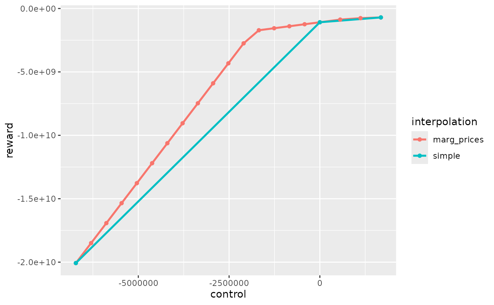

Initialize study and run simulations
opts <- antaresRead::setSimulationPath("your/path/to/the/antares/study","input")
area <- "area"
pumping <- T #T if pumping possible
mcyears <- 1:3 # Monte Carlo years you want to use
efficiency <- getPumpEfficiency(area,opts=opts)
name = "3sim"
simulation_res <- runWaterValuesSimulation(
area=area,
nb_disc_stock = 3, #number of simulations
mcyears = mcyears,
path_solver = "your/path/to/antares/bin/antares-8.6-solver.exe",
opts = opts,
otp_dest=paste0(opts$studyPath,"/user"),
file_name=name, #name of the saving file
pumping=pumping,
efficiency=efficiency
)Simple interpolation of reward function
With method_old = T, the reward function will simply be
a linear interpolation between simulated control and simulation cost
with one control per simulation. This method gives an underestimation of
the real reward function.
reward_db <- get_Reward(
simulation_names = simulation_res$simulation_names,
simulation_values = simulation_res$simulation_values,
opts=opts,
area = area,
mcyears = mcyears,
efficiency = efficiency,
method_old = T
)
#> Warning: 'memory.limit()' is Windows-specific
reward_simple <- reward_db$rewardIn this example, with 3 simulations, the reward function for the first week and the first Monte Carlo year has 3 different controls.
reward_simple %>%
dplyr::filter(mcYear==1,timeId==1)%>%
ggplot2::ggplot() +
ggplot2::aes(x = control, y = reward) +
ggplot2::geom_point()
Interpolation with marginal prices
With method_old = F, each simulation will give one local
estimation of the reward function thanks to marginal prices that is an
overestimation of the real reward function. Local estimations are then
combined to form only one reward function by taking the minimum of all
estimations. Each local estimation is evaluated for controls listed in
possible_controls.
reward_db <- get_Reward(
simulation_names = simulation_res$simulation_names,
simulation_values = simulation_res$simulation_values,
opts=opts,
area = area,
mcyears = mcyears,
efficiency = efficiency,
method_old = F,
possible_controls = constraint_generator(area=area,
mcyears=mcyears,
nb_disc_stock = 20,
pumping = pumping,
efficiency = efficiency,
opts=opts)# used for marginal prices interpolation
)
reward_marg_interp <- reward_db$rewardWe can look at local estimation of reward function :
reward_db$local_reward %>%
dplyr::filter(mcYear==1,week==1) %>%
ggplot2::ggplot() +
ggplot2::aes(x = u, y = reward, color = simulation) +
ggplot2::geom_point()
The final estimation is obtained by taking the minimum of all estimations :
reward_marg_interp %>%
dplyr::filter(mcYear==1,timeId==1) %>%
ggplot2::ggplot() +
ggplot2::aes(x = control, y = reward) +
ggplot2::geom_point()
In this example, with nb_disc_stock = 20, the reward
function for the first week and the first Monte Carlo year has 20
different controls.
Comparaison
rbind(dplyr::mutate(reward_marg_interp,interpolation = "marg_prices"),
dplyr::mutate(reward_simple,interpolation = "simple")) %>%
dplyr::filter(mcYear==1,timeId==1) %>%
ggplot2::ggplot() +
ggplot2::aes(x = control, y = reward, color = interpolation) +
ggplot2::geom_line(linewidth = 1) +
ggplot2::geom_point()
Simple interpolation undestimates the reward function and interpolation with marginal prices overestimates the reward function. The real one is between the red and the blue curve. The interpolation with marginal prices is more time consuming but is more precise for the same number of simulation so this method should be use in order to reduce the number of simulations.